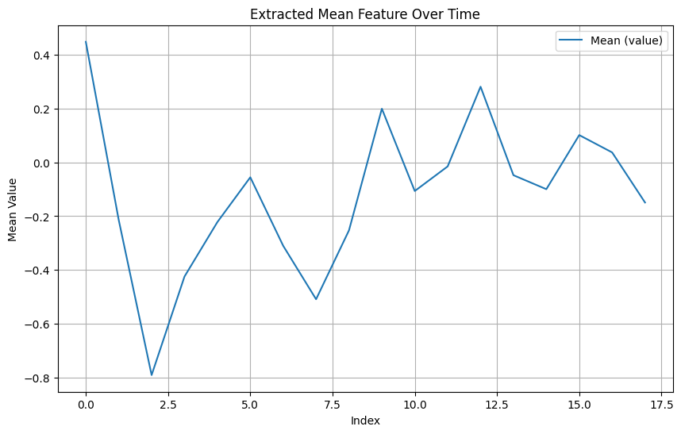

Basic Usage of interpreTS Library#
This notebook demonstrates how to use the interpreTS library for feature extraction from time series data.
Step 1: Import Libraries#
[6]:
import pandas as pd
import numpy as np
from interpreTS.core.feature_extractor import FeatureExtractor, Features
import interpreTS
print(f"interpreTS version: {interpreTS.__version__}")
interpreTS version: 0.5.0
Step 2: Prepare Sample Time Series Data#
[7]:
# Create a sample time series DataFrame
np.random.seed(42) # For reproducibility
data = pd.DataFrame({
"timestamp": pd.date_range(start="2023-01-01", periods=100, freq="D"),
"value": np.random.randn(100),
"id": np.repeat([1, 2], 50) # Two different time series (IDs 1 and 2)
})
# Display the first few rows of the data
print("Sample data:")
print(data.head())
Sample data:
timestamp value id
0 2023-01-01 0.496714 1
1 2023-01-02 -0.138264 1
2 2023-01-03 0.647689 1
3 2023-01-04 1.523030 1
4 2023-01-05 -0.234153 1
Step 3: Initialize FeatureExtractor#
The FeatureExtractor class is the central component of the library. You can specify features to extract, the time window size, and other parameters.
[8]:
# Initialize the FeatureExtractor
extractor = FeatureExtractor(
features=[
Features.MEAN,
Features.VARIANCE,
Features.HETEROGENEITY,
Features.SPIKENESS
], # Specify features to extract
window_size=10, # Rolling window size of 10 samples
stride=5, # Step size of 5 samples
id_column="id", # Group by 'id' column
feature_column="value" # Extract features from the 'value' column
)
Step 4: Extract Features#
Use the extract_features method to calculate features for the specified rolling windows.
[9]:
# Extract features
features = extractor.extract_features(data)
# Display the extracted features
print("Extracted features:")
print(features.head())
Extracted features:
mean_value variance_value heterogeneity_value spikeness_value
0 0.448061 0.470467 1.613638 0.412307
1 -0.213979 1.032079 5.004545 -0.131802
2 -0.790658 0.513464 0.955311 0.015516
3 -0.424293 0.698953 2.077002 1.013266
4 -0.221844 0.596187 3.668792 0.630831
Step 5: Visualize Extracted Features#
Visualize the extracted features to understand the time series’ behavior better.
[15]:
import matplotlib.pyplot as plt
%matplotlib inline
# Plot one of the extracted features over time
plt.figure(figsize=(10, 6))
plt.plot(features.index, features['mean_value'], label="Mean (value)")
plt.title("Extracted Mean Feature Over Time")
plt.xlabel("Index")
plt.ylabel("Mean Value")
plt.legend()
plt.grid()
plt.show()



Step 6: Add a Custom Feature#
You can also add a custom feature to the library.
[11]:
# Define a custom feature function
def calculate_range(data):
return data.max() - data.min()
# Register the custom feature
extractor.add_custom_feature(
name="RANGE",
function=calculate_range,
metadata={
"level": "easy",
"description": "Range of values in the window (max - min)."
}
)
# Extract features again, including the custom feature
features_with_custom = extractor.extract_features(data)
# Display the features with the custom feature
print("Extracted features with custom feature:")
print(features_with_custom.head())
Custom feature 'RANGE' added successfully.
Extracted features with custom feature:
mean_value variance_value heterogeneity_value spikeness_value
0 0.448061 0.470467 1.613638 0.412307
1 -0.213979 1.032079 5.004545 -0.131802
2 -0.790658 0.513464 0.955311 0.015516
3 -0.424293 0.698953 2.077002 1.013266
4 -0.221844 0.596187 3.668792 0.630831
Step 7: Use the Library with Time-Based Windows#
[12]:
data['timestamp'] = pd.to_datetime(data['timestamp'])
data.set_index('timestamp', inplace=True)
data.sort_index(inplace=True)
data = data.asfreq('1D')
data.fillna(method='ffill', inplace=True)
# Initialize the FeatureExtractor with time-based windows
time_based_extractor = FeatureExtractor(
features=[Features.MEAN, Features.VARIANCE],
window_size="10d",
stride="5d",
id_column="id",
sort_column="timestamp",
feature_column="value"
)
time_based_features = time_based_extractor.extract_features(data)
print("Extracted features with time-based windows:")
print(time_based_features.head())
Extracted features with time-based windows:
mean_value variance_value
0 0.448061 0.470467
1 -0.213979 1.032079
2 -0.790658 0.513464
3 -0.424293 0.698953
4 -0.221844 0.596187
C:\Users\slawek\AppData\Local\Temp\ipykernel_66928\2252922758.py:5: FutureWarning: DataFrame.fillna with 'method' is deprecated and will raise in a future version. Use obj.ffill() or obj.bfill() instead.
data.fillna(method='ffill', inplace=True)
Step 8: Use Advanced Features (e.g., HETEROGENEITY)#
Heterogeneity measures the coefficient of variation, providing insights into variability.
[13]:
# Initialize the FeatureExtractor for heterogeneity
heterogeneity_extractor = FeatureExtractor(
features=[Features.HETEROGENEITY],
window_size=20,
stride=10,
id_column="id",
feature_column="value"
)
# Extract heterogeneity
heterogeneity_features = heterogeneity_extractor.extract_features(data)
# Display the extracted heterogeneity feature
print("Extracted heterogeneity features:")
print(heterogeneity_features.head())
Extracted heterogeneity features:
heterogeneity_value
0 5.604416
1 1.615857
2 3.639584
3 3.564077
4 8.506366